mac
码农必备
1. iTerm2
-
官网 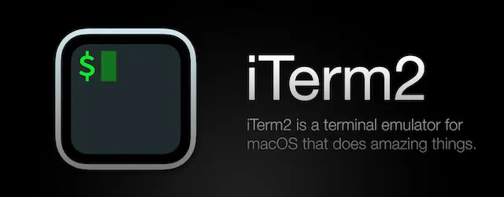
-
配置cmd+u切换窗口透明 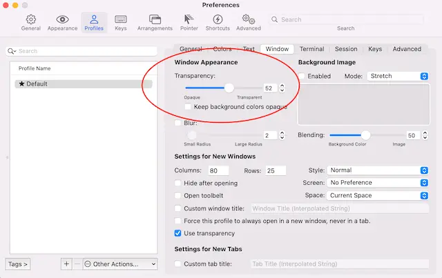 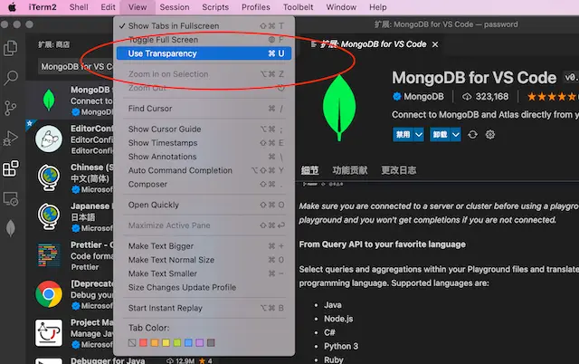
-
快速ssh
-
创建一个profile脚本
vim aliyun_iterm2_profile #填写模板内容,替换主机地址和密码,有可能第一次需要手动ssh root@xxxx,添加信任主机 #!/usr/bin/expect -f set user root set host ip set password pwd set timeout -1 spawn ssh $user@$host expect "*password:*" send "$password\r" interact expect eof #增加可执行权限 chmod a+x aliyun_iterm2_profile -
增加profile配置 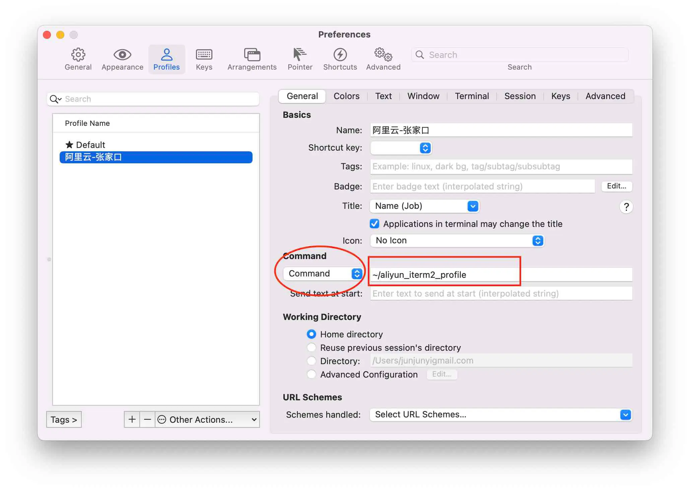
command要从login shell->command,上图中红色圈圈
上图中红色方框填入第一步profile路径
-
选择执行profile 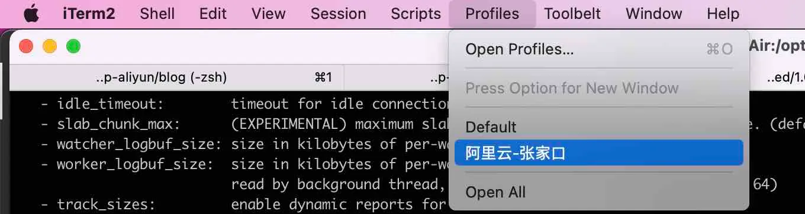
-
-
替代品wrap
- 安装时需要注册帐户,目前采用github授权,最好翻墙，否则会完成不了整个过程
2. brew
3.oh-my-zsh
-
安装命令
# 如果github访问不了,导致安装不了.则采用国内源安装 # /bin/zsh -c "$(curl -fsSL https://gitee.com/cunkai/HomebrewCN/raw/master/Homebrew.sh)" sh -c "$(curl -fsSL https://raw.github.com/ohmyzsh/ohmyzsh/master/tools/install.sh)" -
常用插件
plugins=( git docker extract dnf colored-man-pages command-not-found zsh-syntax-highlighting zsh-autosuggestions ) 历史记录采用年月日 HIST_STAMPS="yyyy-mm-dd" 在~/.zshrc配置文件里设置ZSH_THEME为你的主题名称 ZSH_THEME="robbyrussell" alias cd="z" alias ping="gping" alias ps="procs -tree" alias du="dust" alias df="duf" alias ls="exa -l --header --git" alias cat="bat" eval "$(mcfly init zsh)" eval "$(zoxide init zsh)"- zsh-syntax-highlighting
- zsh-autosuggestions
- extract 所有类型的文件解压一个命令x全搞定，再也不需要去记tar后面到底是哪几个参数了。
- command-not-found 当你输入一条不存在的命令时，会自动查询这条命令可以如何获得
- zoxide代替cd,可能不用启动z
- 提供一个 z 命令，在常用目录之间跳转。类似 autojump，但是不需要额外安装软件。
- gping图形化显示ping结果
- colored-man-pages 给你带颜色的 man 命令
- docker 自带插件，可以实现docker命令补全和自动提示。
- difft 自带语法比较,可以替代diff
# Set git configuration for the current repository. git config diff.external difft # Set git configuration for all repositories git config --global diff.external difft- 官方还提供了大量插件，大部分是针对某些功能的命令补全，如golang, python, pip, ruby, vagrant等。
# 显示最近10条历史命令 history [start] [end],正数从头,负数从尾 history -E -10- 禁止自动更新
打开ohmyzsh(zsh) 的配置文件: ~/.zshrc 找到DISABLE_AUTO_UPDATE一行，将行首的注释'#'去掉，则可禁用ohmyzsh 自动检查更新。
4. vscode
Visual Studio Code 有一个广泛的扩展市场，可以增加你的便利度。但在安装其中一个之前，最好先看看它是否还没有原生支持。随着时间的推移，包含改进和功能的每月发布更新，越来越多的 Visual Studio Code 扩展将不再需要。“有一堆扩展是 bulitin 的，你可以禁用所有你不需要的。进入扩展面板，搜索 @builtin”
-
官网 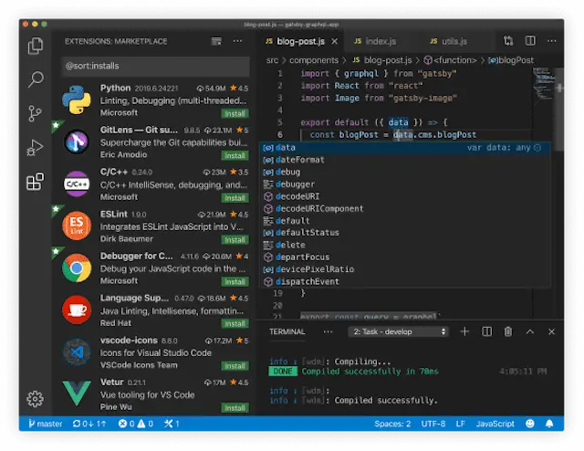
-
优秀插件
-
tabnine 有免费的AI助手编码,必须强赞一下
-
CodeGeex 另一个自动生成代码
-
shellman shellcheck shell-format(Alt+Shift+F) Code Runner
-
NGINX Configuration Language Support
-
Go for Visual Studio Code 支持一键生成单元测试
-
Python
-
MongoDB for VS Code
-
Redis For VS Code
-
MySQL
-
vscode-drawio 直接在vscode中画图
-
docker
-
toml
-
yaml
-
vscode-pdf
-
Markdown PDF
-
Markdown Preview Mermaid Support
-
vscode-proto3 在.vscode里面的settings.json设置protoc及相关路径
-
JumpProtobuf 在.proto文件跳转f12键
-
Git History
-
GitLens — Git supercharged
-
indent-rainbow
-
vscode-icons用icon标识不同文件
-
Better Comments用不同色彩展示注释
-
Error Lens加强错误显示
-
Project Dashboard把经常使用project固定到仪盘表中
-
CodeSnap 是一个代码截图插件，只需选中项目中相应的代码段，即可快速创建代码的截图。
-
tabnine-AI写代码帮助https://www.tabnine.com/
-
Copilot-AI写代码帮助https://github.com/features/copilot/,tabnine类似
-
Output Colorizer *.log文件彩色输出
-
vscode-database-client 高级使用需要收费 https://github.com/cweijan/vscode-database-client
-
swagger preview-可以设置端口,直接测试接口
-
Hex Editor 以16进制格式查看文件
-
Rainbow CSV
-
Rainbow Brackets
-
Excel Viewer
-
Prettify JSON
-
Path Autocomplete
-
SQL Formatter
-
Regex Previewer
-
Code Spelling checker
-
English word hint
-
vscode-fileheader 插入文件头注释,并且自动更新时间及作者
-
-
自带markdown preview功能,cmd+shift+v
-
tab/shift+tab整体正/反缩进,cmd+click跳进,ctrl+-跳回
-
已知bug
-
vscode打开目录层次不对,应该直接打开工程目录,不能打开父目录,否则报下面错误
could not import github.com/gomodule/redigo/redis (cannot find package "github.com/gomodule/redigo/redis" in any of /usr/local/go/src/github.com/gomodule/redigo/redis (from $GOROOT) /Users/.../gopath/src/github.com/gomodule/redigo/redis (from $GOPATH)) -
自动保存可能会自动插入空格,在生成代码文件,需要注意,可能造成bug.
-
-
修改go test timeout超时
- 点击左下角齿轮->设置 打开用户设置
- 在搜索栏中输入 go test timeout
- 可以找到 go.testTimeout为30s
-
工作空间 workspace多个目录一起打开，组合
-
命令行直接调用
- 命令面板(shift+cmd+p)
- 输入shell command
- 选择Install ‘code’ command in PATH
- 命令行输入code .
-
代码片断
- 打开vscode,file–>preference(首选项)—>user snippets(用户代码片断),输入python回车，添加如下代码：
"Print with space lines": { "prefix": "ppp", "body": [ "print('\\n'*2, $1)", ], "description": "Print with space lines" }
然后在编写python程序 时候，连续按ppp就可以快捷输出打印变量。
5. fig大幅度提高效率
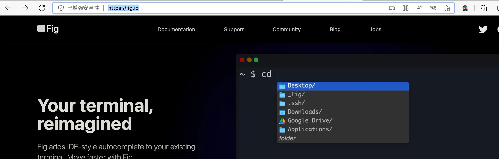
# 下载安装保存位置
~/.local/bin
- 需要填写邮箱用来同步设置,否则没有效果
6. webp converter批量转换webp格式,appstore免费
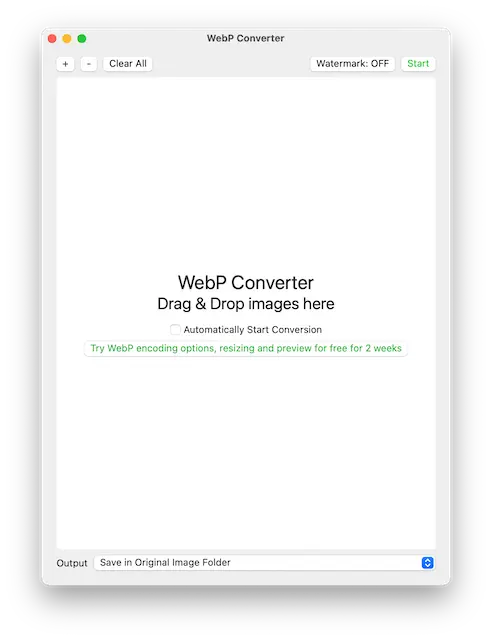
7. Atomgithub开源免费文本编辑器,已死掉了

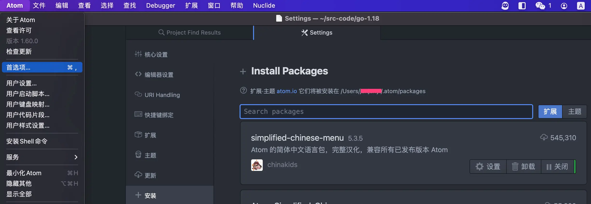
- 优秀插件
- simplified-chinese-menu
- go-plus
- markdown-writer
- platformio-ide-terminal
- file-icons
- regex-railroad-diagram
8. sublimetext,闭源可免费使用文本编辑器

-
安装打开终端插件 terminus
-
cmd+shift+p 然后输入 install package 输入 terminus
-
配置key
{ "keys": ["ctrl+`"], "command": "toggle_terminus_panel", }, { "keys": ["ctrl+shift+`"], "command": "terminus_open", "args": { "cwd": "${file_path:${folder}}" } },
-
-
安装语法高亮nginx配置文件插件 sublime-nginx/Nginx Log Highlighter
- cmd+shift+p 然后输入 install package 输入 nginx
-
安装shell脚本语法高亮插件 Pretty Shell
- cmd+shift+p 然后输入 install package 输入 Pretty Shell
-
安装markdown插件 markdown Editing
- cmd+shift+p 然后输入 install package 输入 [markdown Editing]
-
Rainbow CSV
-
Rainbow Brackets
-
Git
-
AutoFileName
-
Pretty JSON
-
Pretty Protocol buf
-
Protocol Syntax Highlighting
-
FileIcons
-
SQL Formatter
-
GitSyntaxes
-
advanced CSV
-
JsFormat
-
HTMLBeautify
-
docker file lint/ docker high light
-
主题及color主题是两种，可以分开选择
9. chrome,无google全家桶的chrome
brew install --cask eloston-chromium
利用蓝牙传输文件
-
在"系统偏好设置"->“蓝牙”开启功能
-
等待发现蓝牙设备,连接设备,在设备上同意配对
-
mac向设备传输文件使用“蓝牙文件交换”(位于“应用程序”文件夹的“实用工具”文件夹中)
-
设备向mac传输文件,则mac设置蓝牙共享,“系统偏好设置”->“共享”
-
蓝牙传输超慢,建议采用局域网sftp,mac自带sftp服务
无法验证开发者
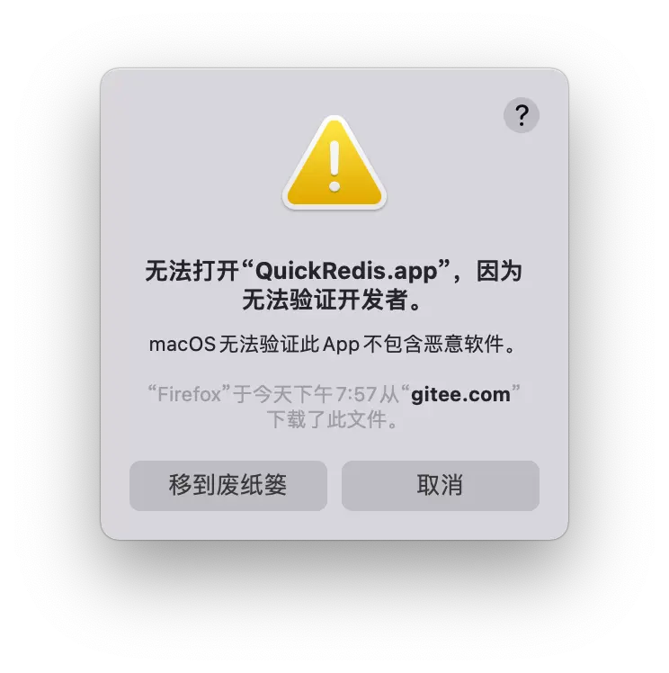
解决办法:在Finder中找到应用程序,并找到该程序,右键->打开 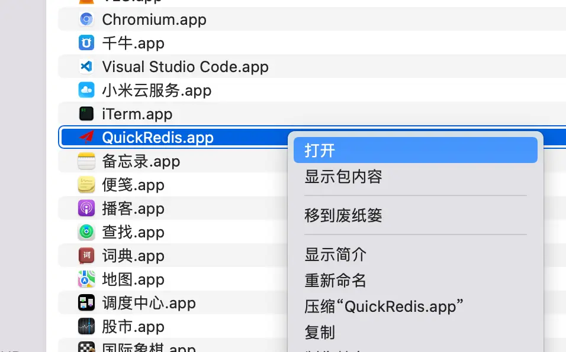
开机启动
-
Login Items
- 在~/Library/Preferences/com.apple.loginitems.plist
- 在系统偏好设置的“用户与群组”下面进行设置，可以删除、添加、开启和关闭;
-
Launchd Daemon,launchd来负责启动
- ~/Library/LaunchAgents
- /Library/LaunchAgents
- /System/Library/LaunchAgents
- ~/Library/LaunchDaemons
- /Library/LaunchDaemons
- /System/Library/LaunchDaemons
-
StartupItems
- /System/Library/StartupItems
- /Library/StartupItems
技巧
- 在命令行打开访达当前目录
open 特定目录
open .
- 截屏 shift+cmd+5 非常不错,谁用知道
- 朗读-读出所选内容(option+ecs),如果没有效果,则可能系统声音选择不对，本机器上反应有点慢，要等几秒才能读。 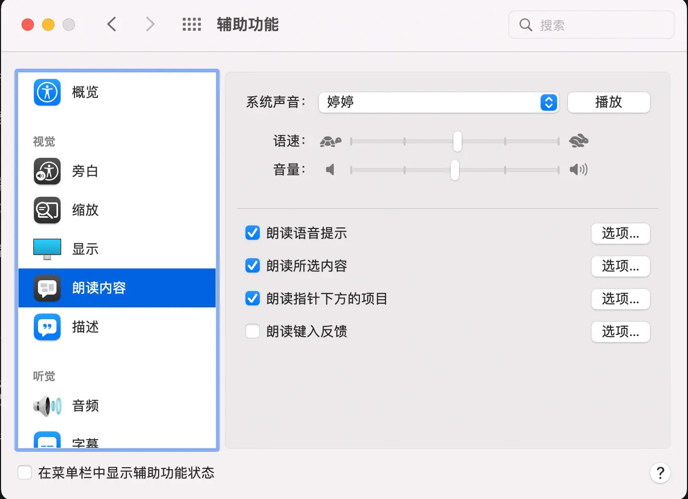
- mac字体路径 /System/Library/Fonts,/Library/Fonts,ttf是mac和freetype共同推出的字体文件,ttc是ttf的集合文件(https://www.cnblogs.com/fortunely/p/16651504.html)
- 目前苹果有intel和M1芯片两种,软件下载安装时,注意Mac silicon/arm64/aarch指明适用M1芯片
- xcode默认只有英文界面，不支持中文界面
- iphone采用数据线连上mac,在新版的mac上没有iTunes,在访达偏好设置中有一个显示ios设备选项，否则无法显示出来!
- AppleID网络iCloud同步,前面打勾就会自动上传或下载同步iCloud空间中,
- iCloud云盘是iCloud空间一个目录,本地也有一个对应目录
- 照片也是iCloud空间一个目录,本地也有一个对应目录
- 其他华为,小米帐号iCloud空间都是类似的 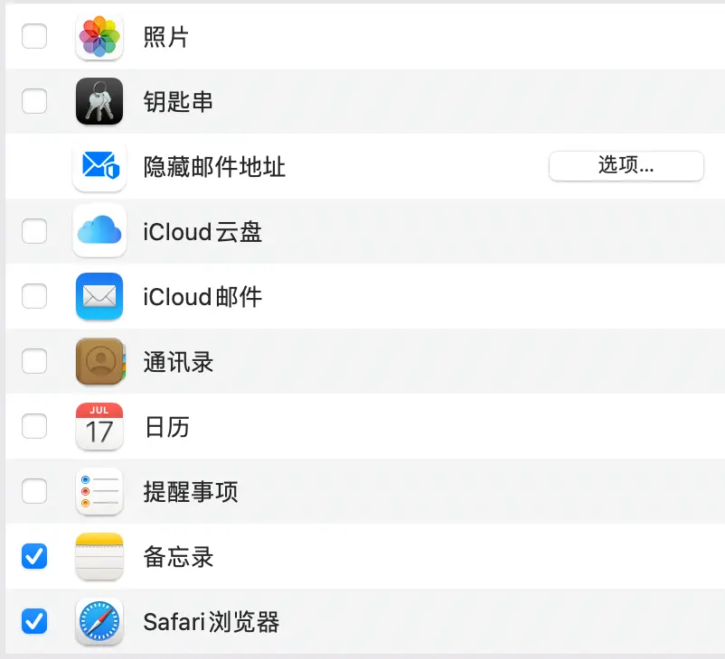
- 查看端口
lsof -i tcp:8080
- 查看本机地址
# mac把Wi-Fi称为en0
ifconfig en0
-
修改hosts sudo vim /etc/hosts
-
深色模式,保护眼睛 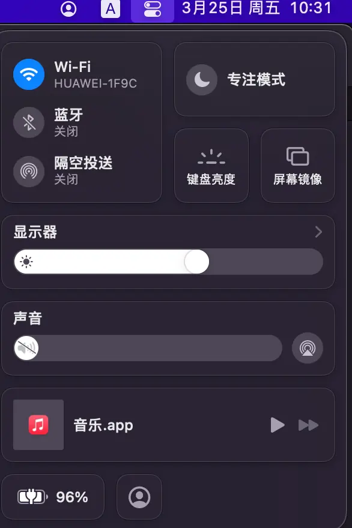
-
删除Microsoft Auto Update,烦人的更新提示
cd /Library/Application Support/Microsoft/MAU2.0 sudo rm -rf Microsoft\ AutoUpdate.app -
树状显示目录tree
brew install tree tree -
十六进制显示文件
# xxd系统自带,-l只显示开头40字节 xxd -l 40 filename -
访达/系统按键
名称 作用 回车键 重命名文件夹或文件 command + o 打开文件 command + ↓ 打开文件 command + ↑ 进入当前目录的上一级目录 空格键 预览 -
imagemagick 图像处理神器
brew install imagemagick
# 注意参数位置density是修饰pdf,否则会采用默认72dpi
magick convert -density 300 enroll-sch.pdf -resize 1330x1900 -quality 100 ./photo/enroll-sch.jpg
- ssh免密登录远程
# 输入密码就能实现远程免密登陆，本质上pub文件内容加到远程机器~/.ssh/authorized_keys文件中
ssh-copy-id -i /root/.ssh/id_rsa.pub root@192.168.0.104
-
鼠标按windows滚动
- 打开Mac系统偏好设置
- 在系统偏好设置界面，点击"鼠标"
- 进入鼠标的设置窗口，单击“光标与点按"标签
- 在光标与点按设置面板，将"滚动方向：自然"的勾选去掉即可
- 然后在滑动鼠标，即和windows的滚轮一样了
-
替换按键ctrl+alt 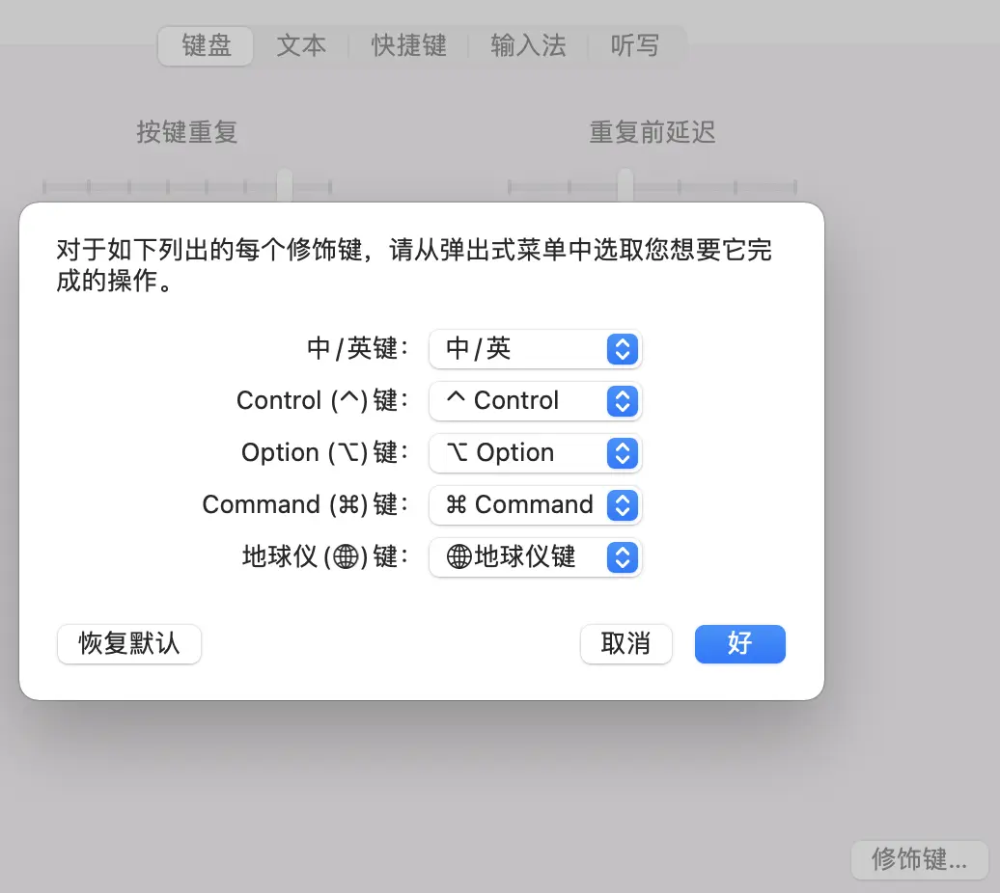
-
mac电脑的默认字体-苹方字体，中文就是-苹方-简,有专门的"字体册"app管理
-
编程仅好字体 Menlo, Monaco, ‘Courier New’, monospace 12大小